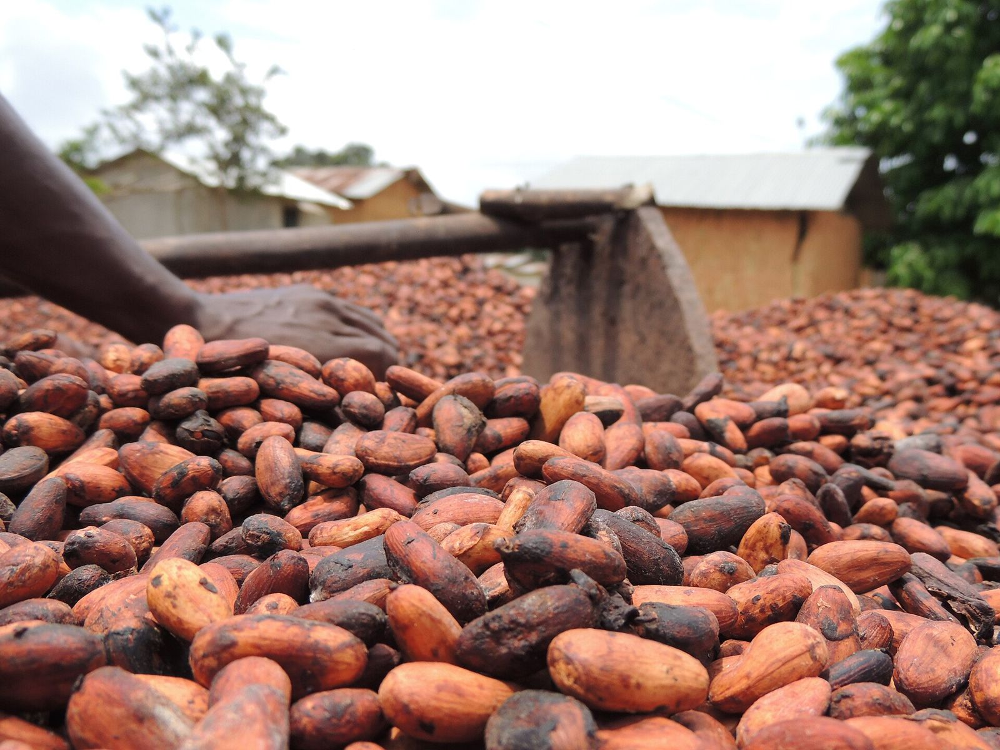
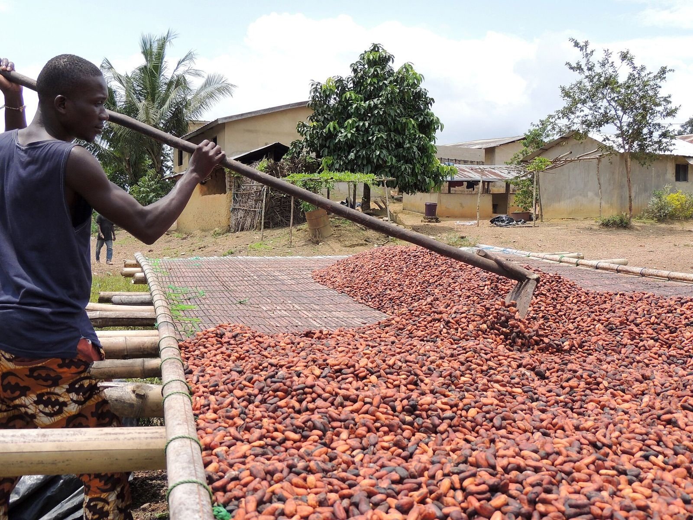

Promotionnelle · 2 min 56 · voix masculine
Un lot contaminé peut fermer un marché
Un système appliqué sur vos lignes, pas un classeur : points critiques, traçabilité, rappel.
GEC-CI vous aide à construire un système ISO 22000 réel, appliqué sur vos lignes, prouvé par vos enregistrements, et prêt à être évalué par l'organisme certificateur accrédité de votre choix.
Programmes prérequis, analyse des dangers, PRPo et CCP, plan HACCP, traçabilité, rappel et urgences. Nous vendons un système qui fonctionne et se prouve, pas une promesse de date.

Les bonnes pratiques d'hygiène sont la fondation : sans PRP solides, aucun plan HACCP ne tient.
Dangers biologiques, chimiques (mycotoxines, pesticides, métaux), physiques et allergènes, étape par étape, avec niveaux acceptables justifiés.
ISO 22000 distingue deux types de mesures de maîtrise : les CCP à limites critiques mesurables, les PRPo à critères d'action.
Prouver que la mesure fonctionne, la contrôler en continu, puis confirmer après coup que tout a été fait.
Relier chaque lot à ses matières et à ses clients, et le prouver par des exercices réguliers.
Échanger les informations de sécurité avec fournisseurs, clients, autorités et en interne avec l'équipe SDA.
Très bien, c'est une base. ISO 22000 ajoute le système autour : PRP vérifiés, traçabilité testée, urgences, revue de direction, amélioration. Le diagnostic montre ce qui manque.
FSSC 22000 inclut ISO 22000 plus des PRP sectoriels et des exigences additionnelles ; il est reconnu GFSI. Le choix dépend de vos clients : nous le vérifions avec eux avant de commencer.
Le vrai coût est souvent celui d'un conteneur refusé ou d'un client perdu. Nous chiffrons après diagnostic, par lots, et vous pouvez avancer étape par étape.
Un plan de surveillance analytique basé sur le risque cible les bons paramètres et la bonne fréquence, au lieu d'analyser tout, tout le temps.
Les fondamentaux (PRP, HACCP, traçabilité) ne changent pas. Un système bien construit sur 2018 se met à jour ; les certifications restent délivrées sur l'édition en vigueur.
Nous concevons des consignes visuelles, des fiches simples et des formations au poste, en langue comprise, et nous vérifions la compréhension sur le terrain.
Voix off française, musique, texte affiché à l'écran : à partager avec votre conseil d'administration et vos équipes. Toutes les vidéos GEC-CI PRO
Un système appliqué sur vos lignes, pas un classeur : points critiques, traçabilité, rappel.
Prérequis, analyse des dangers, CCP et PRPo, ochratoxine A dans le cacao, valider, surveiller, vérifier.
Ce que chacun couvre, les dates à connaître et comment choisir selon vos clients.
Dix étapes de la ligne de production à l'audit ; alertes CCP et paiement à l'avancement.

Un lot de cacao ou de cajou bloqué à l'arrivée pour contaminant ou corps étranger coûte le conteneur, la confiance et parfois le contrat.
Les acheteurs internationaux demandent ISO 22000, FSSC 22000 ou un référentiel reconnu GFSI avant de référencer un fournisseur.
Un plan existe mais personne ne sait l'appliquer : fiches remplies en fin de journée, limites non justifiées, diagrammes jamais vérifiés.
Réclamation pour corps étranger ou allergène : on ne sait pas quels lots bloquer ni qui prévenir, et le rappel tourne au chaos.
La même méthode que pour nos filières agricoles ; seul le référentiel change. La décision de certifier appartient à l'organisme certificateur accrédité.
Numérotation ISO 22000:2018 + Amendement 1:2024 (action climatique, 4.1 et 4.2). La révision (DIS enregistré en 2026, publication attendue en 2027) est signalée dans le champ 'nouveau' ; ses numéros et contenus ne sont pas vérifiés (confirmer = true). Programmes prérequis : série ISO 22002-x:2025 (ex-ISO/TS 22002-x).
Reformulation GEC-CI. Le texte officiel de la norme, acheté auprès de l'ISO ou de CODINORM, fait foi. Risque : niveau d'écart le plus fréquent en Côte d'Ivoire, selon GEC-CI. 4 article(s) portent la mention « À CONFIRMER AUPRÈS DE L'ORGANISME COMPÉTENT AVANT MISE EN ŒUVRE OU AUDIT ».
Répondez honnêtement : rien n'est enregistré ni envoyé. Le résultat donne vos priorités ; il ne remplace pas le diagnostic sur place.
Les acheteurs européens exigent un certificat reconnu et des résultats d'analyses contaminants solides.
Produits périssables, allergènes multiples, distribution en grandes surfaces.
Eau, hygiène des lignes et microbiologie sont au cœur du risque.
Le risque principal porte sur nuisibles, humidité, contaminations croisées et traçabilité des lots.
Elle veut vendre plus cher et sécuriser ses lots face aux exigences des exportateurs.
Personnages : illustrations créées pour GEC-CI, ils ne représentent pas des personnes réelles.
Facture normalisée électronique pour chaque étape, sur procès-verbal de livraison. Le prix se calcule après le diagnostic, lot par lot. Aucun paiement n'est conditionné à l'obtention du certificat : l'organisme certificateur accrédité décide seul.
Vos données restent à vous : elles sont hébergées dans votre espace et vous sont restituées en fin de contrat.
68 articles, preuves codées, registres, analyse d'écarts, indicateurs, manuel intégré et passerelle IA GECI ; base de données en ligne sécurisée.
Ouvrir la plateformeManuel opérationnel : procédures, registres codifiés, check-lists et points à confirmer. Intégré à la plateforme, aussi en PDF ci-dessous.
Lire dans la plateformeSensibilisation des dirigeants, formation du responsable du système, auditeurs internes et personnel de terrain.
Demander une sessionLe système de gestion du cabinet : clients, contrats, missions, preuves, validations humaines, incidents, facturation et journal d'audit. Un seul compte pour toutes les plateformes GEC-CI ; droits vérifiés par le serveur.
Ouvrir IA GECIGEC-CI est dirigé par Mr SIDIBE ABDOULAYE, Président-Directeur Général, ATN RA et formateur-auditeur ISO 9001, 14001 et 45001. La direction suit chaque mission jusqu'à la décision écrite.
Portraits de bureau : décors mis en scène numériquement.
| Premier contact | Réponse le jour même, rendez-vous sous 7 jours |
| Diagnostic | Rapport sous 10 jours ouvrés après la visite |
| Vos questions | Réponse sous 48 heures ouvrées |
| Comité de pilotage | Chaque mois, compte rendu sous 5 jours ouvrés |
| Données transmises | Retour écrit sous 5 jours ouvrés |
| Audit blanc | Rapport sous 7 jours ouvrés |
Avec les 68 articles de la norme. Vous repartez avec vos trois priorités.
+225 05 55 49 45 94WhatsApp+225 07 57 88 13 49